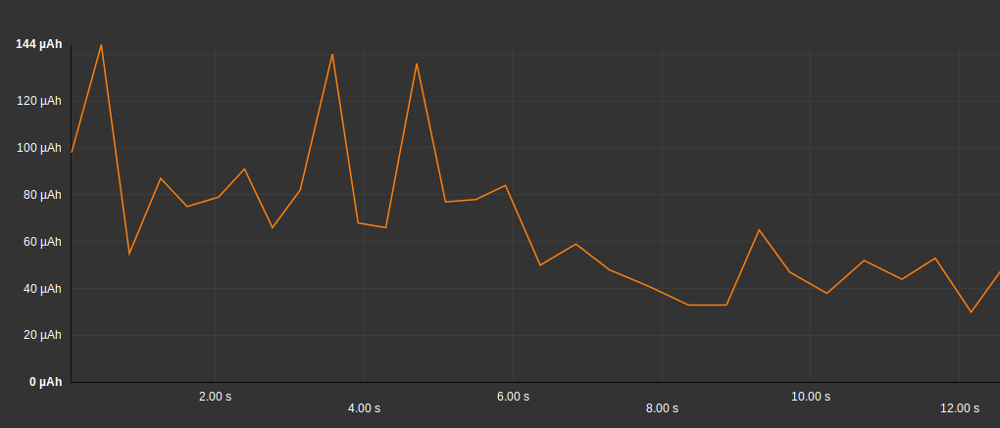
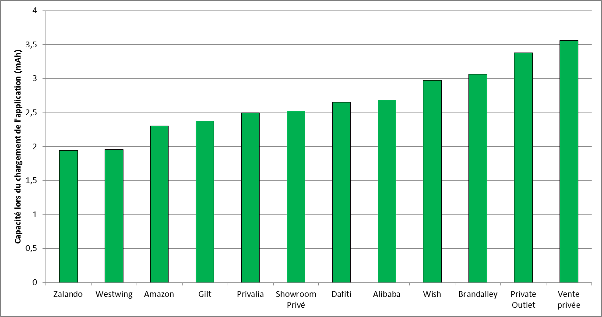
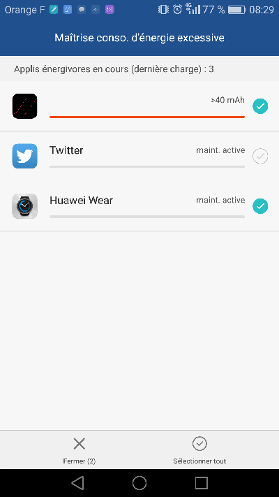

L’autonomie des smartphones stagne depuis plusieurs années. Les fabricants proposent des batteries de plus grande capacité, les utilisateurs indiquent que l’autonomie est un de leurs tout premiers critères d’achat, et pourtant l’autonomie moyenne des appareils n’augmente pas. Pourquoi ? Parce que le matériel lui-même est plus puissant donc plus gourmand ; mais aussi parce que les applications consomment toujours plus de ressources.
Alors, pour améliorer la perception que les utilisateurs ont de leur appareil, les fabricants pointent du doigt les applications les plus gourmandes, afin d’inciter les développeurs à plus de vertu. Google suit le même raisonnement sur le Play Store en favorisant le référencement des applications les plus légères.
Alors oui, même une application « grand public » utilisée de temps en temps doit être optimisée pour consommer le moins de batterie possible. En évitant que votre application apparaisse comme consommatrice d’énergie, vous améliorerez son référencement, sa rétention et in fine l’expérience utilisateurs. Autant de points vitaux pour son succès.
L’autonomie, critère de choix du matériel
Tout utilisateur de smartphone a déjà été en situation critique à cause d’un niveau de batterie très faible : plus moyen d’être contacté, impossibilité de trouver une adresse avant un rendez-vous, pas de billet de train ou d’avion à montrer au contrôle… Le besoin presque vital de maintenir sa batterie chargée est devenu une réelle préoccupation pour la moitié de l’humanité.
Il n’est pas étonnant donc que l’’autonomie soit un des premiers critères de choix des acheteurs. Les constructeurs travaillent continuellement sur l’amélioration de l’efficacité des batteries et du matériel. Et la presse technologique suit attentivement ce sujet.
En attendant une hypothétique nouvelle technologie idéale, des solutions apparaissent régulièrement. L’offre de « solutions » applicatives permettant de d’optimiser sa consommation de batterie est foisonnante sur les stores, cependant sans fort impact sur l’amélioration de l’autonomie. Alors les utilisateurs se rabattent sur des palliatifs : extensions de batterie (« power bank ») USB, mini-panneaux solaires… autant d’accessoires à ajouter au budget de l’utilisateur et qui encombrent ses sacs.
Malgré cela, l’anxiété liée à la batterie vide continue d’augmenter…
Que font les constructeurs ?
Cette problématique est évidemment bien connue des constructeurs. En effet, l’amélioration de l’autonomie est un challenge qui s’opère à l’échelle de chaque composant : les batteries bien sûr mais aussi la taille et la technologie de l’écran, le choix des composants électroniques, leur intégration globale, mais aussi les couches logicielles. En effet, les constructeurs intègrent des OS (comme Android), développent des drivers pour les composants électroniques mais aussi développent des applications pour les utilisateurs, en les créant ou en adaptant des applications AOSP Android.
Mais pourquoi travailler sur les applications ?
Simplement parce que la plate-forme matérielle n’est pas la seule cause de la décharge de batterie. Les couches logicielles ne sont pas innocentes dans ce problème, loin de là. Et en y réfléchissant un peu, c’est normal ! Voici par exemple une courbe simplifiée de consommation d’énergie lors du chargement d’une application:

On voit la surconsommation causée par le lancement de l’application.
Vous vous en doutez, toutes les applications ne vont pas avoir le même impact sur l’autonomie globale du téléphone. Voici par exemple une comparaison de la consommation du lancement d’applications de e-commerce, qui varie environ du simple au double :

L’usage de fonctions comme le GPS, le Bluetooth ou la vidéo (ou demain les fonctionnalités d’AR ou de VR) ont un impact qui n’est pas que l’unique raison de ces inégalités. En effet, en fonction de sa conception, de son usage, des services externes, des capteurs qu’elle va solliciter… une application va consommer plus ou moins.
Malheureusement (ou heureusement), les applications ont bien un impact fort sur l’autonomie de nos smartphones.
L’impact des applications, un critère primordial
Les constructeurs sont conscients de cet impact des applications. Ils travaillent à l’optimisation de leurs propres applications, mais ils n’ont aucune prise sur les applications qui sont installées après la sortie de l’usine… Cela commence par les opérateurs téléphoniques ou les intégrateurs, qui ajoutent leurs propres applications. Puis les utilisateurs installent… ce qu’ils veulent.
Toutes ces applications vont avoir un impact plus ou moins fort sur l’autonomie. Et au final, même si le constructeur n’est pas directement responsable, l’utilisateur associera la faible autonomie de son appareil avec la marque et le modèle du téléphone : « 71% des utilisateurs considèrent que la qualité d’une application peut influencer sur l’image de la marque » (Source : baromètre des usages mobiles ,Juin 2017, EBG)
Il est donc de l’intérêt des constructeurs d’encourager les éditeurs d’applications à maîtriser la consommation de batterie de leurs apps. De même, il est de l’intérêt de Google de promouvoir des applications vertueuses sur le Play Store, afin de donner une image positive de l’écosystème Android face à celui d’Apple… et réciproquement.
Que font les constructeurs ? Ils vous dénoncent aux utilisateurs.
Les constructeurs ont intérêt à sensibiliser les utilisateurs sur ce complexe problème de l’autonomie et surtout à reporter la faute sur les concepteurs d’applications.
Citons par exemple Huawei, qui désormais adresse des alertes explicites à ses utilisateurs en cas de surconsommation détectée :

Cette même volonté de promouvoir les applications économes se retrouve intégrée dans les écosystèmes de Google et Apple. Depuis longtemps, les plates-formes n’hésitent pas à pointer du doigt les applications consommatrices. Le système liste pour cela la part de consommation de chaque application:

La dernière version d’Android 8.1 Oreo renforce cette fonctionnalité en ajoutant une notification des applications consommatrices.
Mais cette logique ne se limite pas au téléphone de l’utilisateur, on la retrouve aussi sur les stores. Ainsi, Google prend en compte l’énergie consommée dans ses critères de référencement ASO des applications.
Vous saviez probablement déjà que l’efficience était indispensable pour un bon référencement web, Google nous confirme ici qu’elle l’est également pour les applications (ASO). C’est un critère à ne pas négliger puisque 80% des utilisateurs utilisent le store comme point d’entrée de leur recherche d’applications (Source baromètre des usages mobiles, Juin 2017,EBG).
Un exemple ? Google explique l’expérience de Busun qui est passé d’une notre de 4.1 à 4.5 en améliorant sa performance.
Que fait l’utilisateur ?
Supposons que l’utilisateur a trouvé votre application sur le store, qu’il a été convaincu de l’installer, il reste maintenant à le conserver.
Et là… Soit votre appli fais partie de la douzaine d’applications « critiques », incontournables et sans équivalent réel (Google Maps, Facebook…) : dans ce cas l’utilisateur acceptera la consommation de batterie comme un mal nécessaire, il râlera dans son coin mais conservera votre application.
Soit votre application fait partie du million d’autres applications, considérées comme non essentielles ou disposant de nombreuses alternatives (banque en ligne, voyagiste, informations…) : dans ce cas l’utilisateur aura tôt fait de désinstaller votre appli pour passer à la concurrence… Non sans avoir laissé au préalable un commentaire désagréable sur le store.
Conclusion
Les propriétaires d’applications grand public pensent parfois que l’impact de leur appli sur l’autonomie de l’appareil n’est pas un problème. Après tout, elle n’est utilisée que de temps en temps, ce n’est pas elle qui va vider la batterie, n’est-ce-pas ? Nous avons vu qu’il n’en est rien. Même une application grand public peut souffrir fortement d’un défaut de comportement en la matière. Les utilisateurs s’en rendront compte : référencement dégradé, rétention faible, avis négatifs… Le succès d’une application passe – aussi – par une bonne maîtrise de son efficience.